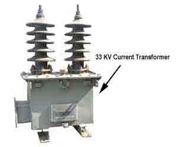

Current Transformer CT class Ratio Error Phase Angle Error in Current Transformer
Definition of Current Transformer
Current Transformer Class
Theory of Current Transformer
Error in Current Transformer
The Current Error or Ratio Error
Phase Error or Phase Angle Error
Cause of Error
How to Reduce Error in Current Transformer
Definition of Instrument Transformer
Instrument transformers means current transformer & voltage transformer are used in electrical power system for stepping down currents and voltages of the system for metering and protection purpose. Actually relays and meters used for protection and metering, are not designed for high currents and voltages.
High currents or voltages of electrical power system can not be directly fed to relays and meters. CT steps down rated system electric current to 1 Amp or 5 Amp similarly voltage transformer steps down system voltages to 110 V. The relays and meters are generally designed for 1 Amp, 5 Amp and 110 V.
Definition of Current Transformer(CT)
A CT is an instrument transformer in which the secondary electric current is substantially proportional to primary electric current and differs in phase from it by ideally zero degree.
CT Accuracy Class or Current Transformer Class
A CT is similar to a electrical power transformer to some extent, but there are some difference in construction and operation principle. For metering and indication purpose, accuracy of ratio, between primary and secondary currents are essential within normal working range. Normally accuracy of current transformer required up to 125% of rated current; as because allowable system electric current must be below 125% of rated current. Rather it is desirable the CT core to be saturated after this limit since the unnecessary electrical stresses due to system over electric current can be prevented from the metering instrument connected to the secondary of the CT as secondary electric current does not go above a desired limit even primary electric current of the CT rises to a very high value than its ratings. So accuracy within working range is main criteria of a CT used for metering purpose. The degree of accuracy of a metering CT is expressed by CT accuracy class or simply current transformer class or CT class.
But in the case of protection, the CT may not have the accuracy level as good as metering CT although it is desired not to be saturated during high fault electric current passes through primary. So core of protection CT is so designed that it would not be saturated for long range of currents. If saturation of the core comes at lower level of primary electric current the proper reflection of primary electric current will not come to secondary, hence relays connected to the secondary may not function properly and protection system losses its reliability.
Suppose you have one CT with electric current ratio 400/1 A and its protection core is situated at 500 A. If the primary electric current of the CT becomes 1000 A the secondary electric current will still be 1.25 A as because the secondary electric current will not increase after 1.25 A because of saturation. If actuating electric current of the relay connected the secondary circuit of the CT is 1.5 A, it will not be operated at all even fault level of the power circuit is 1000 A.
The degree of accuracy of a protection CT may not be as fine as metering CT but it is also expressed by CT accuracy class or simply current transformer class or CT class as in the case of metering electric current transformer but in little bit different manner.
electric current transformer" title="33KV Current Transformer or CT" class="alignleft"/>
Theory of Current Transformer or CT
A CT functions with the same basic working principle of electrical power transformer, as we discussed earlier, but here is some difference. If a electrical power transformer or other general purpose transformer, primary electric current varies with load or secondary current. In case of CT, primary electric current is the system electric current and this primary electric current or system electric current transforms to the CT secondary, hence secondary electric current or burden electric current depends upon primary electric current of the electric current transformer.
Are you confused? OK let us clear you.
In a power transformer, if load is disconnected, there will be only magnetizing electric current flows in the primary. The primary of the power transformer takes electric current from the source proportional to the load connected with secondary . But in case of CT, the primary is connected in series with power line. So electric current through its primary is nothing but the electric current flows through that power line. The primary electric current of the CT, hence does not depend upon whether the load or burden is connected to the secondary or not or what is the impedance value of burden. Generally CT has very few turns in primary where as secondary turns is large in number. Say Np is number of turns in CT primary and Ip is the electric current through primary. Hence the primary AT is equal to NpIp AT.
If number of turns in secondary and secondary electric current in that electric current transformer are Ns and Is respectively then Secondary AT is equal to NsIs AT.
In an ideal CT the primary AT is exactly is equal in magnitude to secondary AT.
So from the above statement it is clear that if a CT has one turn in primary and 400 turns in secondary winding, if it has 400 A electric current in primary then it will have 1 A in secondary burden.
Thus the turn ratio of the CT is 400/1 A
Error in Current Transformer or CT
But in an actual CT, errors with which we are connected can best be considered through a study of phasor diagram for a CT,
Is - Secondary current.
Es - Secondary induced emf.
Ip - Primary current.
Ep - Primary induced emf.
KT - Turns ratio = Numbers of secondary turns/number of primary turns.
I0 - Excitation current.
Im - Magnetizing component of I0.
Iw - Core loss component of I0.
Φm - Main flux.
Let us take flux as reference. EMF Es and Ep lags behind the flux by 90°. The magnitude of the passers Es and Ep are proportional to secondary and primary turns. The excitation electric current Io which is made up of two components Im and Iw.
The secondary electric current I0 lags behind the secondary induced emf Es by an angle Φ s. The secondary electric current is now transferred to the primary side by reversing Is and multiplied by the turns ratio KT. The total electric current flows through the primary Ip is then vector sum of KT Is and I0.
The Current Error or Ratio Error in Current Transformer or CT
From above passer diagram it is clear that primary electric current Ip is not exactly equal to the secondary electric current multiplied by turns ratio, i.e. KTIs. This difference is due to the primary electric current is contributed by the core excitation current. The error in electric current transformer introduced due to this difference is called electric current error of CT or some times ratio error in electric current transformer.
Phase Error or Phase Angle Error in Current Transformer
electric current transformer" title="132KV Current Transformer or CT" class="alignleft"/>
For a ideal CT the angle between the primary and reversed secondary electric current vector is zero. But for an actual CT there is always a difference in phase between two due to the fact that primary electric current has to supply the component of the exiting current. The angle between the above two phases in termed as phase angle error in electric current transformer or CT.
Here in the pharos diagram it is β
the phase angle error is usually expressed in minutes.
Cause of Error in Current Transformer
The total primary electric current is not actually transformed in CT. One part of the primary electric current is consumed for core excitation and remaining is actually transformers with turns ratio of CT so there is error in electric current transformer means there are both ratio error in electric current transformer as well as a phase angle error in electric current transformer.
How to Reduce Error in Current Transformer
It is desirable to reduce these errors, for better performance. For achieving minimum error in electric current transformer, one can follow the following,
- Using a core of high permeability and low hysteresis loss magnetic materials.
- Keeping the rated burden to the nearer value of the actual burden.
- Ensuring minimum length of flux path and increasing cross-sectional area of the core, minimizing joint of the core.
- Lowering the secondary internal impedance.
 by
by